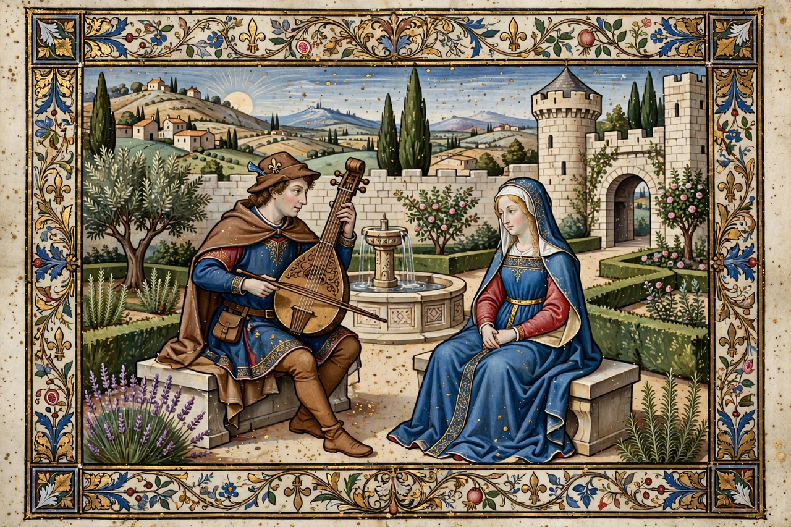

From Wikipedia, the free encyclopedia
| Active period | c. 1100 – c. 1300 |
|---|---|
| Region | Occitania (southern France) |
| Language | Old Occitan |
| Main themes | Courtly love (fin'amor), chivalry, satire |
| Key figures | William IX of Aquitaine, Bernart de Ventadorn, Arnaut Daniel |
A troubadour was a composer and performer of Old Occitan lyric poetry during the High Middle Ages (1100–1350). Troubadours flourished in the courts of Occitania — modern southern France — and their art spread to northern France, Italy, Spain and Germany. Their central invention was the poetry of courtly love, fin'amor, addressed to an idealised, usually unattainable lady.

A troubadour performing before a court.
The earliest known troubadour was Duke William IX of Aquitaine (1071–1127), grandfather of Eleanor of Aquitaine. Troubadours ranged from great lords and kings — Richard the Lionheart wrote verse — to knights, clerics and commoners. Poets who composed were troubadours; the professional singers who performed their songs were joglars (jongleurs). Female troubadours, the trobairitz, such as the Comtessa de Dia, wrote from the woman's point of view. About 450 troubadours are known by name, and some 2,600 poems survive, roughly a tenth with melodies.
The principal genre was the canso, a love song of intricate stanzaic form. Others included the sirventes (political or moral satire), the tenso (debate between two poets), the alba (dawn song of parting lovers), the planh (lament) and the pastorela. Poets competed in formal ingenuity: Arnaut Daniel invented the sestina, later admired by Dante and Petrarch. Dante placed several troubadours in the Divine Comedy and praised Arnaut as the "better craftsman of the mother tongue".
The Albigensian Crusade (1209–1229) devastated the Occitan courts that sustained troubadour culture, scattering poets to Spain and Italy. Their legacy shaped the northern French trouvères, the German Minnesang, Italian court poetry, Dante, Petrarch, and ultimately the whole European tradition of love lyric.